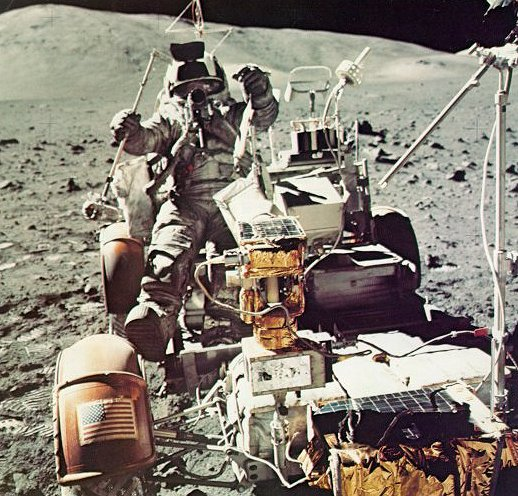
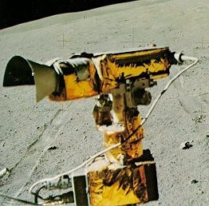
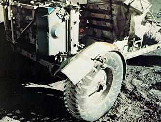

|  |
| Mounting the Rover when spacesuited takes a bit of doing. You stand facing forward by the side of the vehicle, jump upward about two feet with a simultaneous sideways push, kick your feet out ahaed, and wait as you slowly settle into the seat, ideally in the correct one. Here I'm completimg the job. |
|  | The television camera on the Rover, which could be remotely controlled from Earth during traverse stops, was the eye of the science team. It gave them much of the information needed to radio advice up to us. |
|  | Broken fenders slung lunar dust about wickedly, but could be repaired by a field fix consisting of spare maps held by clamps. By chance the commanders of the last three missions each somehow managed to break a fragile fender. |